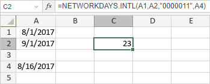

NETWORKDAYS.INTL funkcija
Funkcija NETWORKDAYS.INTL je jedna od funkcija za datum i vreme. Koristi se za izračunavanje broja celih radnih dana između dva datuma, uz korišćenje parametara za određivanje koji i koliko dana su vikendi.
Sintaksa
NETWORKDAYS.INTL(start_date, end_date, [weekend], [holidays])
Funkcija NETWORKDAYS.INTL ima sledeće argumente:
| Argument | Opis |
|---|---|
| start_date | Prvi datum perioda, unet pomoću funkcije DATE ili druge funkcije za datum i vreme. |
| end_date | Poslednji datum perioda, unet pomoću funkcije DATE ili druge funkcije za datum i vreme. |
| weekend | Opcioni argument, broj ili string koji određuje koji se dani smatraju vikendima. Mogući brojevi navedeni su u tabeli ispod. |
| holidays | Opcioni argument koji određuje koji su datumi, pored weekend, neradni. Možete ih uneti pomoću funkcije DATE ili druge funkcije za datum i vreme, ili navesti referencu na opseg ćelija koji sadrži datume. |
Argument weekend može imati jednu od sledećih vrednosti:
| Broj | Dani vikenda |
|---|---|
| 1 ili izostavljen | Subota, nedelja |
| 2 | Nedelja, ponedeljak |
| 3 | Ponedeljak, utorak |
| 4 | Utorak, sreda |
| 5 | Sreda, četvrtak |
| 6 | Četvrtak, petak |
| 7 | Petak, subota |
| 11 | Samo nedelja |
| 12 | Samo ponedeljak |
| 13 | Samo utorak |
| 14 | Samo sreda |
| 15 | Samo četvrtak |
| 16 | Samo petak |
| 17 | Samo subota |
Napomene
String koji određuje dane vikenda mora sadržati 7 karaktera. Svaki karakter predstavlja dan u nedelji, počevši od ponedeljka. 0 označava radni dan, a 1 označava dan vikenda. Na primer, "0000011" označava da su vikendi subota i nedelja. String "1111111" nije validan.
Kako primeniti funkciju NETWORKDAYS.INTL.
Primeri
Slika ispod prikazuje rezultat koji vraća funkcija NETWORKDAYS.INTL.
